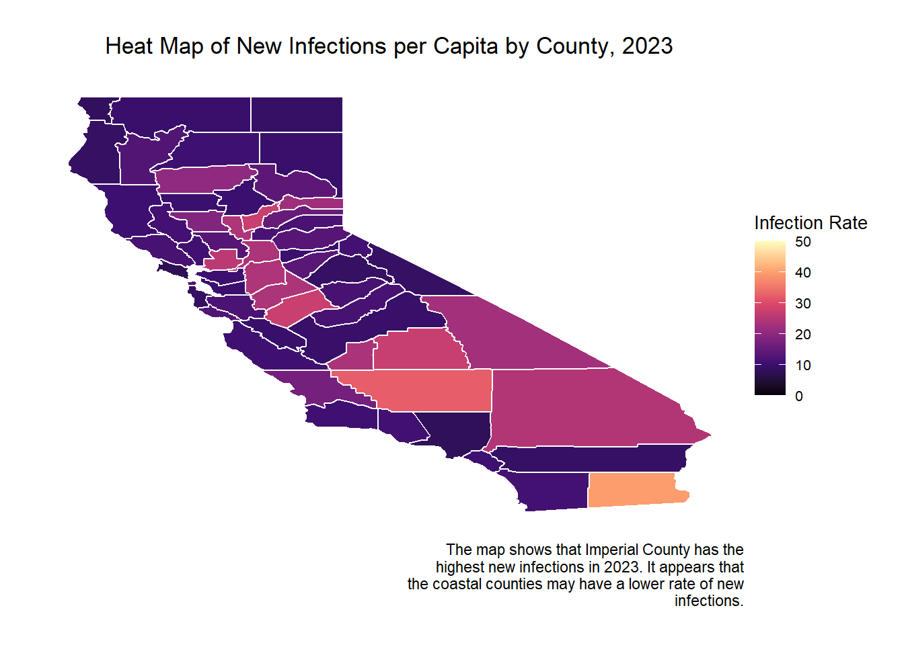

# map of new infections by county
ca_counties <- map_data("county") %>%
filter(region == "california")
stratified_rate_infections_lower <- stratified_rate_infections %>%
mutate(county = str_to_lower(county))
map_data <- ca_counties %>%
left_join(stratified_rate_infections_lower, by = c("subregion" = "county"))
# map
long_caption <- "The map shows that Imperial County has the highest new infections in 2023. It appears that the coastal counties may have a lower rate of new infections."
wrapped_caption <- str_wrap(long_caption, width = 50)
ggplot(map_data, aes(long, lat, group = group, fill = new_infections_per_capita)) +
geom_polygon(color = "white") +
scale_fill_viridis_c(option = "magma", limits = c(0,50), na.value = "grey") +
labs(title = "Heat Map of New Infections per Capita by County, 2023", fill = "Infection Rate", caption = wrapped_caption) +
theme_void() +
theme(
plot.title = element_text(hjust = 0.5, margin = margin(b = 10)),
legend.position = "right",
legend.title = element_text(size = 10),
legend.text = element_text(size = 8),
plot.margin = margin(t = 20, r = 20, b = 20, l = 20)
)